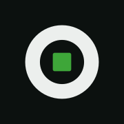

onia — logo v1
Lockup principal — claro y oscuro
logo.svg · sobre blanco
logo-dark.svg · sobre tinta #0C110F
Variantes
wordmark.svg (silencioso)
isotype.svg
isotype · oscuro
favicon.svg
Tamaños — el favicon debe leer a 16px

Negativo — monocromo blanco (regla §4.3: sobre verde, sin verde)
negativo mono sobre tinta
mono sobre el verde del logo
Archivos
| Archivo | Rol |
|---|---|
logo.svg | Lockup completo. Auto-adapta tinta por prefers-color-scheme; verde fijo #3EA639. |
logo-dark.svg | Colores fijos para fondo negro (docs, propuestas, exports). |
wordmark.svg | Solo letras, monocromo — variante silenciosa (footer/papelería). |
isotype.svg | Símbolo solo: la "o" + cursor verde adentro (módulo encendido). |
favicon.svg / favicon-32.png / apple-touch-icon-180.png | Baldosa tinta + isotipo. Colores fijos, lee en pestañas claras y oscuras. |
En la web el logo va inlineado en components/brand-wordmark.tsx (mismo arte) para seguir el toggle manual de tema. Regenerar PNGs: npm install --no-save sharp && node scripts/generate-brand-icons.mjs desde apps/onia-platform.